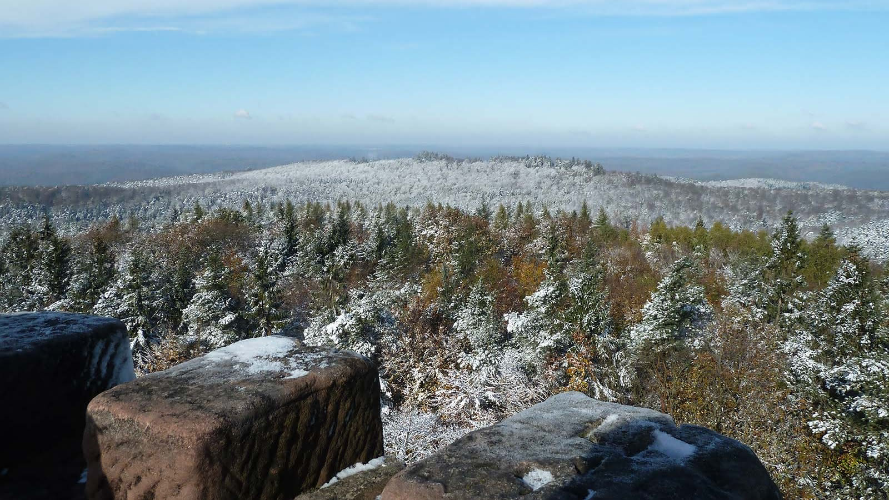

01 | Sortie du
mercredi 7 Octobre
Le mercredi 7 octobre le CV Lemberg vous propose une sortie chez nos voisins allemands, du coté de Pirmasens. (n'oubliez pas le masque !)
Départ de L’EICHELBACHERMUHLE – KALBERKLAMM – VINNINGEN Repas à la STOCKWALDHUTTE WINZEL .
retour par HEXENKLAMM – GERSBACH.
DURÉE DE LA RANDONNÉE : 2h30 le matin et 1h30 l’après midi.
DÉPART du Chalet du club vosgien de Lemberg à 9H où 9H15 PARKING DU SUPERMARCHE MATCH A BITCHE.
02 | Sortie du
dimanche 6 septembre
Le dimanche 6 septembre le CV Lemberg vous propose une sortie au Grand Wintersberg
DÉPART au chalet de Lemberg à 9h, à bitche à 9h15 et à 10h à la maison forestière du Riesthal.
Guide: Antoine Piccin

03 | Sortie du
mercredi 2 septembre
Pour la sortie du 02 septembre 2020, nous nous rendons à Schorbach/Hanviller/Haspelschiedt.
Repas tiré du sac sous abri à HASPELSCHIEDT.
Rendez-vous à 9 heures au chalet du club Vosgien de Lemberg ou au Parking à l’entrée de SCHORBACH (ateliers municipaux) à 9h20.
DURÉE DE LA RANDONNÉE : 2h30 le matin et 1h30 l’après-midi
Guide : Heim Gilbert 06.81.73.13.81.
04 | Sortie du
mercredi 4 août
En Direction des hauteurs de SPICHEREN, Brême d’or et Sarrebruck Chemin de la mémoire – Chemin des Rochers.
Repas tiré du sac sous abri à HASPELSCHIEDT.
Rendez-vous à 9 heures au chalet du club Vosgien de Lemberg ou au Parking à l’entrée de SCHORBACH (ateliers municipaux) à 9h20.
DURÉE DE LA RANDONNÉE : Durée de marche 2h30 le matin – 1h30 l’après midi. Repas tiré du sac. Rendez-vous au chalet du club Vosgien de Lemberg à 9h et parking gare de Woelfling à 9h20.
Guide : Heim Gilbert 06.81.73.13.81.
05 | Sortie du
mardi 14 juillet
Afin de vous remettre du confinement, le CV Lemberg vous propose une sortie en Forêt Noire le 14 juillet 2020
Rendez vous au chalet du CV Lemberg à 8h00. Possibilité de co-voiturage.
Le circuit de randonnée est facile, 200m de dénivelé à la portée de tous. Nous arpenterons le célèbre « SchnapsBrune Tour ».
Retour par le Mumelse.